A baseline study of 14 dating & matrimony apps' Android store listings (Google Play, India store, English) — screenshots, descriptions, and ASO tactics
This report is the baseline step in a three-part project: (1) understand how competing dating and
matrimony apps present themselves on the Google Play Store today, (2) infer what Riteangle's own
listing should say and show, and (3) develop the creatives and update the live listing. Only step
(1) is covered here.
Fourteen apps were audited directly on the Google Play Store (India storefront, English), split
across three groups: global mainstream swipe apps (Tinder, Bumble, Hinge, happn, OkCupid, Badoo,
Coffee Meets Bagel), India-focused modern dating apps (Aisle, QuackQuack, FRND), and India matrimony
/ marriage-intent apps (Shaadi.com, BharatMatrimony, Betterhalf, Knot). A fifteenth planned entrant,
Woo (the India-founded dating app formerly by U2opia Mobile), could not be located on
the current Play Store — its listing appears to have been delisted or repositioned to a US 30+
market under a different name (see the note at the end of this report). Nothing was substituted in
its place.
Three cross-cutting findings stand out. First, screenshot strategy splits cleanly into three
templates: pure lifestyle/emotion photography with no UI (Tinder, Shaadi.com's opening slides,
Betterhalf's entire carousel), literal device-framed in-app UI proof (BharatMatrimony, QuackQuack,
OkCupid, Knot), and a hybrid that opens with one or two emotional hero shots before pivoting to real UI
(Bumble, Hinge, Aisle, Coffee Meets Bagel, Badoo, happn, FRND) — the hybrid pattern is the most
common and arguably the safest default. Second, India-market trust deficit is the dominant theme
in copy, not romance: verification badges (selfie, phone, ID, Aadhaar-adjacent), fake-profile
callouts, and "genuine profiles" language appear in nearly every India-relevant listing (QuackQuack,
Shaadi.com, BharatMatrimony, Betterhalf, Aisle, Knot), because it is the specific objection India users
raise in reviews. Third, a single negative-review pattern recurs across almost every paid app in
the set regardless of category or rating — users report that matches or profile visibility
"dry up" immediately after they pay for a subscription. This shows up in Tinder, Aisle, Shaadi.com,
BharatMatrimony, and OkCupid's own review threads, independent of how polished the listing is. That
consistency is a real whitespace opportunity for a differentiated trust/monetization narrative, not
just a listing-design one.
Comparison at a Glance
App
Rating
Installs
Category badge
Segment
Tinder
4.2★
500M+
#2 top free dating
Global mainstream swipe apps
Bumble
4.2★
100M+
#1 top grossing dating
Global mainstream swipe apps
Hinge Dating App
4.0★
10M+
#3 top grossing dating
Global mainstream swipe apps
happn
4.2★
100M+
#8 top free dating
Global mainstream swipe apps
OkCupid
3.9★
50M+
none observed
Global mainstream swipe apps
Badoo Dating App
3.7★
100M+
none observed
Global mainstream swipe apps
Coffee Meets Bagel Dating App
3.2★
5M+
Editors' Choice
Global mainstream swipe apps
Aisle
4.6★
10M+
none observed
India-focused modern dating
QuackQuack Dating App in India
4.3★
10M+
none observed
India-focused modern dating
FRND
4.5★
50M+
#10 top free social
India-focused modern dating
Shaadi.com Matrimony App
4.4★
10M+
none observed
India matrimony / marriage-intent
Bharat Matrimony® Marriage App
4.0★
10M+
none observed
India matrimony / marriage-intent
Betterhalf.ai®
4.0★
5M+
none observed (categorized as “Social,” not “Dating”)
India matrimony / marriage-intent
Knot.dating
4.1★
10K+
none observed
India matrimony / marriage-intent
Anatomy of an Attractive Play Store Listing
Pulling from all 14 audits, these are the recurring, nameable components that make a listing land
— and the ones that visibly don't.
1. Title & short description
Verb-stacked titles win search intent. Tinder ("Match. Chat. Date."), Bumble ("Dating
App & Friends"), and QuackQuack ("Dating App in India") all pack the exact phrases a user types into
search directly into the title, rather than relying on brand name alone.
Brand-only titles (Shaadi.com, Betterhalf) push all keyword work into the description
instead — a valid alternative once brand recognition is already high, but it means a new or
smaller app (like Knot, at 598 reviews) needs the title to do more of the work.
The short description is the only copy guaranteed to be read — it's the one line
shown in search results before a tap. The strongest examples state a differentiator in under 12 words
(Hinge: "designed to be deleted"; Aisle: "Built for real commitment"; CMB: "for serious daters") rather
than a generic feature list.
2. Icon & screenshot visual system
One consistent color field, repeated on every screenshot and the icon, is the single
most reliable "looks professional" signal — Bumble's yellow/black, Aisle's magenta, QuackQuack's
mustard, happn's near-black-then-cream duo, Knot's maroon. Betterhalf and Shaadi.com's red/magenta systems
work the same way even though their screenshots are illustrated rather than photographed.
The hybrid screenshot order (emotion first, proof second) is the dominant winning pattern.
Bumble, Hinge, Aisle, Coffee Meets Bagel, Badoo, happn, and FRND all open with one or two lifestyle/brand
photos before shifting to literal device-framed UI for the remaining 3–4 slides. This sells the
outcome before proving the mechanism.
Real device-frame chrome (bezel, notch, status bar) reads as more "authentic app," borderless
marketing cards read as more "produced brand." Aisle and BharatMatrimony use real bezels; Betterhalf
uses none at all across any of its five screenshots — a prospective installer literally cannot see the
product before installing, which is a self-imposed transparency gap none of the higher-rated apps share.
Baking a stat directly into the first screenshot (Aisle's "4.5 Rating · 20M+
Members · 9K Matches/day" row; QuackQuack's "40 Million Users" strap line) makes the value
proposition scannable in the one frame most likely to appear as a search-result thumbnail.
3. Description structure & tone
Emoji density is a deliberate tone choice, not filler — it ranges from zero
(Hinge, happn, OkCupid, Betterhalf, Aisle, Knot, BharatMatrimony) to extremely high (Tinder, Bumble, FRND).
Zero-emoji listings read as premium/editorial; high-emoji listings read as playful/scannable. Neither is
wrong, but it should match the brand voice deliberately rather than defaulting to "some emoji because
competitors have them."
Social proof comes in three flavors, and the strongest listings stack more than one:
raw numbers (Tinder's 60B matches, Shaadi.com's 35M members, Betterhalf's 20 lakh profiles), third-party
press quotes (Hinge and Coffee Meets Bagel both quote named outlets), and Google-granted badges (rank
positions, Editors' Choice). CMB stacks all three at once.
Named, specific paid tiers build more trust than vague "premium" language. Bumble,
Hinge, Aisle, and Badoo all name their subscription products and, in Aisle's and Hinge's case, disclose
auto-renewal terms plainly — versus Betterhalf, Knot, OkCupid, and Coffee Meets Bagel, which describe
perks without ever naming a price or renewal term.
Keyword-stacking for India-specific long-tail search is near-universal among India-relevant
apps — religions, castes/communities, regional languages, and cities are enumerated
explicitly in Shaadi.com, BharatMatrimony, Betterhalf, and (for cities) QuackQuack. BharatMatrimony's
bilingual English+Hindi opening block is the single most India-localized text treatment in the set.
4. Trust & safety signaling
Verification badges shown literally inside a screenshot (Selfie Verified, ID Verified,
Photo Verified) beat verification merely claimed in prose — Coffee Meets Bagel, BharatMatrimony, Aisle,
and Shaadi.com all put a real badge graphic directly on a profile card screenshot.
A category rank badge or an Editors' Choice mark is free, Google-granted credibility
that several apps in this set (Betterhalf, BharatMatrimony, Shaadi.com, Aisle, OkCupid, Knot, Badoo)
simply don't have — worth checking eligibility for, since it costs nothing to display once earned.
Personalized developer replies to negative reviews (Shaadi.com uses the reviewer's
first name; BharatMatrimony's replies are more templated) is a visible, low-cost reputation-management
signal that shows up directly on the listing page itself, where any visitor can see it before installing.
5. Monetization transparency
Listings sit on a clear spectrum from fully disclosed to fully opaque:
Most transparent — Aisle, Hinge, Bumble, Badoo (name every paid tier, disclose
auto-renewal terms in the description itself, and in Badoo's case even show a literal pay-per-message
coin cost inside a screenshot).
Perks-described-but-unpriced — Coffee Meets Bagel, OkCupid, Betterhalf, QuackQuack
(name the premium tier and list its benefits, but no price or renewal terms appear in the visible copy).
Fully opaque — Knot (no ads/IAP badge, no pricing language anywhere; consistent
with its invite-only positioning).
Recurring Weaknesses & Whitespace
These patterns showed up in the sampled user reviews across multiple, otherwise-unrelated apps —
worth treating as category-level pain points rather than one app's problem:
"Matches dry up right after I paid" is the single most repeated complaint, appearing
in review samples for Tinder, Aisle, Shaadi.com, BharatMatrimony, and OkCupid alike. A listing (and
product) that can credibly promise the opposite — continuity or a replacement guarantee — is
addressing a documented, cross-category trust gap, not inventing a claim.
Fake or bot-like profiles are called out by name in Shaadi.com and BharatMatrimony
reviews specifically, despite both apps' heavy verification messaging — suggesting the badges alone
aren't fully closing the credibility gap for skeptical users.
Forced sign-in and account-lockout friction (happn's forced Google Sign-In complaints;
Tinder's photo-verification lockouts; FRND's arbitrary-ban complaints) show up as a secondary but real
reputation risk sitting underneath otherwise-strong star ratings.
Illustrated-only screenshots (Betterhalf) mean zero real-product visibility before install
— a self-imposed transparency gap that no other app in this set shares, and one worth avoiding
deliberately rather than by accident.
Individual Competitor Profiles
The following pages cover each of the 14 audited apps in the order shown in the comparison table, grouped
by segment: global mainstream swipe apps, India-focused modern dating apps, and India matrimony /
marriage-intent apps.
Tinder — Match. Chat. Date.
“The dating app that does it all - make friends, meet people, or find a date”
Package
com.tinder
Developer
Tinder LLC
Rating
4.2 stars (9.16M reviews)
Installs
500M+
Monetization
Ads, In-app purchases
Content rating
18+
Category badge
#2 top free dating
Last updated
Aug 31, 2026
Description & positioning
Opens with three emoji-bracketed hook lines and a huge social-proof number (60 billion matches to date), positioning itself as the world's most popular free dating app across 190 countries. Explains the swipe mechanic as a trademarked concept (Swipe Right™ / Swipe Left™) and structures its Plus/Gold premium tiers as a clear feature ladder. Emoji appear on almost every line as a scanning aid. Closes with a long, formal subscription auto-renewal disclosure and a one-line disclaimer that photos are of models.
What's new: Generic forward-looking copy about improving how users find and connect — no specific feature named.
Screenshot carousel
“It starts with a swipe” — full-bleed couple photo, bold white headline low on the frame.“Attract people who actually get you” — same red-overlay lifestyle-photo template.
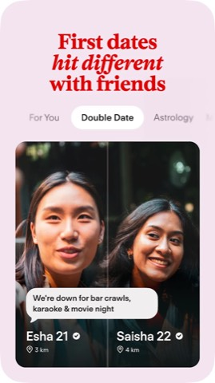
“First dates hit different with friends” — pink background, a “Double Date” feature badge floating over a testimonial-style photo grid.
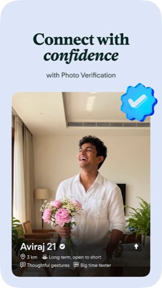
“Connect with confidence” — verified-badge UI callout layered over a portrait photo.
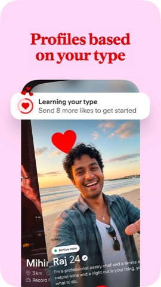
Continues the identical template: dark photo background, bold white headline, small floating UI-proof badge.
Notable ASO / attractiveness tactics
Title keyword-stacks the exact verbs users search for: “Match. Chat. Date.”
Subtitle deliberately widens past romance (“make friends, meet people, or find a date”) to broaden the install funnel.
Google's own “#2 top free dating” rank badge does credibility work the description doesn't have to.
Every screenshot uses one template — full-bleed lifestyle photo, bold headline, small real-feature proof badge — brand photography first, feature proof second.
Heavy legal/subscription disclosure is pushed to the very bottom, after all persuasive copy.
Bumble: Dating App & Friends
“The dating app to meet new people, chat and date with singles or make friends!”
Leads with its core differentiator (women message first) inside a heavily sectioned description with bolded sub-headers and emoji-led bullets on nearly every line. Explicitly keyword-stacks identity terms (“gay dating app,” “bisexual dating app,” “Christian dating app,” “Jewish dating app”) for long-tail search capture, then closes by naming its corporate siblings (Badoo, Fruitz).
What's new: No dated changelog block; an always-on “Advanced Filters help you connect based on goals, plans, and more” callout is shown instead.
Screenshot carousel
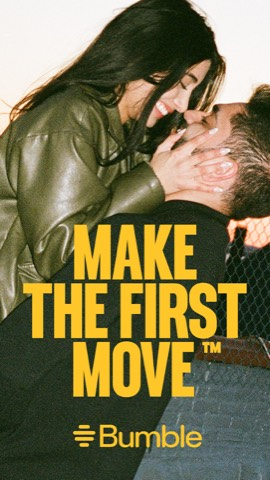
Full-bleed lifestyle photo of a couple, warm backlit grade, bold yellow “MAKE THE FIRST MOVE™” headline — pure brand/emotion, no UI.
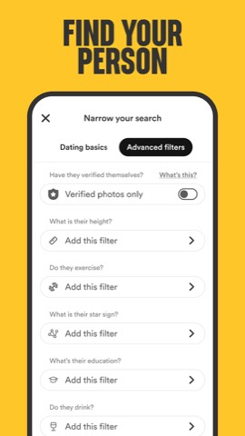
Device-framed UI shot of the Advanced Filters screen on a solid Bumble-yellow field, black condensed headline “FIND YOUR PERSON.”
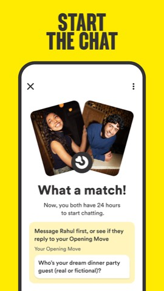
Device-framed match-confirmation screen (“What a match!”) with an opening-message prompt, headline “START THE CHAT.”
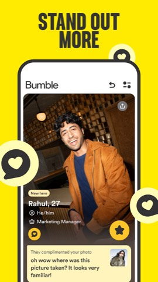
Device-framed profile-detail card using an Indian name (“Rahul, 27”) with floating heart/chat badges, headline “STAND OUT MORE” — localized for the India store.
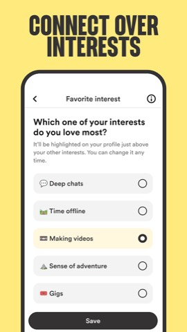
Device-framed onboarding/interest-picker screen, pale-yellow field, headline “CONNECT OVER INTERESTS.”
Notable ASO / attractiveness tactics
Title packs two intents (“Dating App” + “Friends”) into one string to capture both romantic and platonic search traffic.
Storytelling order is emotion → proof → feature: one warm hero photo, then four UI screenshots once attention is captured.
High-contrast brand palette (yellow + black) is identical across every screenshot and the icon — strong thumbnail-size recall in search results.
Leans on the Play Store's own “#1 top grossing” badge instead of baking install numbers into the copy.
Screenshot 4 swaps in an Indian name and setting — real India-store localization, not a generic Western cast.
Monetization is disclosed by naming every paid product specifically (Boost, Premium, Spotlight, SuperSwipe) rather than vaguely.
Hinge Dating App: Match & Date
“The Dating App Designed to be Deleted | Match, Flirt, Meet & Date Single People”
Package
co.hinge.app
Developer
Hinge, Inc.
Rating
4.0 stars (477K reviews)
Installs
10M+
Monetization
In-app purchases (Hinge+, HingeX)
Content rating
18+
Category badge
#3 top grossing dating
Last updated
Aug 28, 2026
Description & positioning
Builds the entire listing around one brand joke — “designed to be deleted” — repeated in the description, a dedicated “HOW WE GET YOU OFF HINGE” section, and even the What's New changelog. Emoji use is light and restrained. Uniquely among the set, it quotes three press outlets (Daily Mail, Washington Post, TechCrunch) as third-party social proof, and discloses subscription auto-renewal terms in a distinct, legally thorough block.
What's new: Keeps the brand joke alive: “We made performance improvements which means you may end up deleting our app even sooner than you intended.”
Screenshot carousel
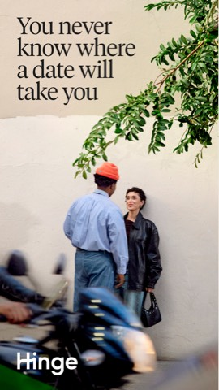
Full-bleed editorial photo of a couple talking outdoors, serif headline “You never know where a date will take you” — no UI shown at all.
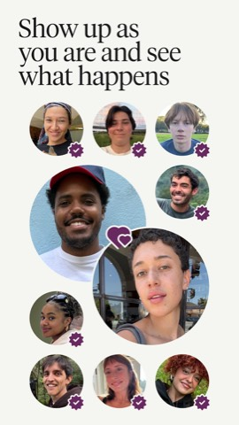
Collage of circular verified-badge headshots (diverse, real-looking), serif headline “Show up as you are and see what happens.”
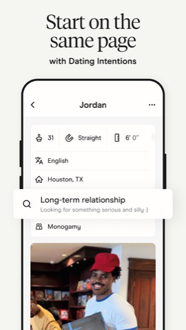
Device-framed profile screen showing named Dating Intentions (“Looking for something serious and silly”), headline “Start on the same page.”
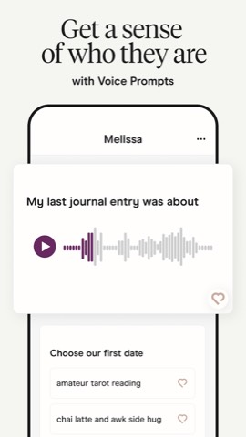
Device-framed Voice Prompt profile card with a playable audio waveform, headline “Get a sense of who they are.”
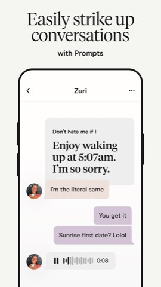
Device-framed in-app chat mixing text and voice-note bubbles, headline “Easily strike up conversations.”
Notable ASO / attractiveness tactics
A single brand tagline is reused consistently across the subtitle, the full description, and the What's New text — the strongest cross-surface brand-voice consistency seen in the set.
Only listing to use third-party press quotes as explicit social proof, rather than store-badge numbers alone.
Screenshots open with real-photo/verified-people imagery to sell trust before any product screen.
Serif display typography signals an editorial, premium tone — distinct from competitors' bold sans-serif marketing type.
Every named feature in the copy (Dating Intentions, Voice Prompts, Prompts) has a matching, clearly labeled screenshot.
Unusually transparent — “all photos are of models” disclaimer sits oddly next to a “real, verified people” narrative.
happn: dating app
“happn is the real-life dating app where you date and meet people!”
Package
com.ftw_and_co.happn
Developer
happn
Rating
4.2 stars (2.07M reviews)
Installs
100M+
Monetization
Ads, In-app purchases
Content rating
18+
Category badge
#8 top free dating
Last updated
Sep 1, 2026
Description & positioning
Opens with a four-word tagline (“Like - Crush - Chat - Date”) then a magazine-style narrative built around its differentiated hook — real-life geo-proximity (“crossing paths”), not blind swiping. Introduces proprietary capitalized feature names (Teasers, CrushTime, SuperCrush) that double as ownable brand vocabulary. No emoji, no explicit pricing disclosure.
What's new: Announces a new “Hobbies” feature with playful example tags for showing personality and matching on shared interests.
Screenshot carousel
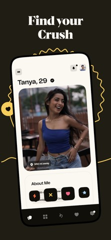
Dark background, serif headline “Find your Crush,” tilted device mockup of a real profile card with a “350 mi away” distance tag.
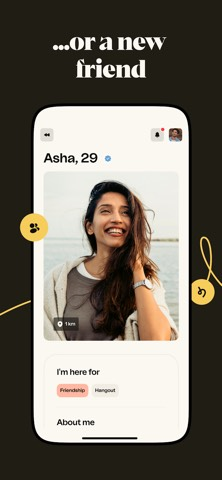
Same dark template, “...or a new friend” — profile card shows “Friendship / Hangout” intent tags, broadening beyond romance.
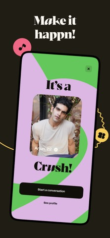
“Make it happn!” — match-celebration interstitial over colorful abstract shapes.
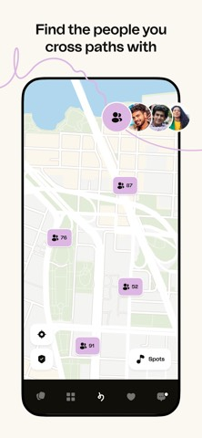
Light cream background, literal map UI with clustered pins visualizing the proximity mechanic — “Find the people you cross paths with.”
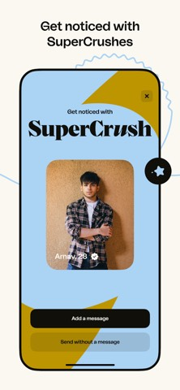
SuperCrush upsell interstitial over abstract geometric color blocks.
Notable ASO / attractiveness tactics
Core differentiator (real-life proximity) is reinforced consistently in both description section headers and a dedicated map-UI screenshot — a clear unique-mechanic narrative.
Proprietary named features (Crush, SuperCrush, Teasers, Hobbies) function as ownable, repeatable keywords.
Two-toned visual system (dark serif slides, then light sans-serif slides) still reads as one brand thanks to consistent doodle accents and device-frame angle.
Weaker category rank (“#8”) than Tinder/Bumble/Hinge, but still carries a Google-granted badge.
Reviews sampled skew negative on premium-paywall frustration and forced Google Sign-In — a reputation risk regardless of listing polish.
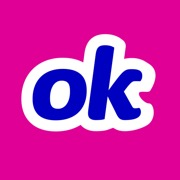
OkCupid: Online Dating App
“Find your kind of love on OkCupid! Meet singles online and go on great dates!”
Package
com.okcupid.okcupid
Developer
Match Group Americas, LLC
Rating
3.9 stars (685K reviews)
Installs
50M+
Monetization
Ads, In-app purchases
Content rating
18+
Category badge
none observed
Last updated
Aug 14, 2026
Description & positioning
Six or seven plain-prose paragraphs of personality-first brand positioning come before any bullet list, with repetitive phrasing (“local dating,” “meet new people,” “great dates”) that reads as deliberate SEO keyword-stuffing rather than persuasive copy. Explicitly calls out India and LGBTQ+ inclusivity as differentiators. Closes with a three-quote press block.
What's new: No distinct changelog text was surfaced separately from the description on this listing.
Screenshot carousel
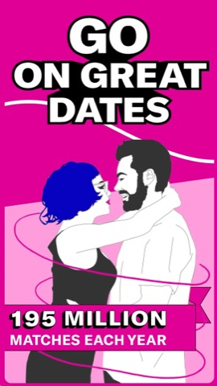
Flat vector illustration on magenta, “GO ON GREAT DATES,” a ribbon stat callout “195 MILLION MATCHES EACH YEAR.”
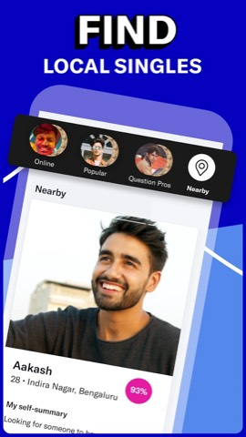
Device-framed UI on royal blue: “FIND LOCAL SINGLES” with an India-localized profile (“Aakash, 28, Indira Nagar, Bengaluru”).
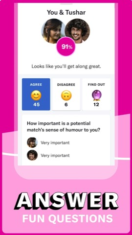
Device-framed compatibility-questionnaire UI, “ANSWER FUN QUESTIONS,” showing a 91% match score.
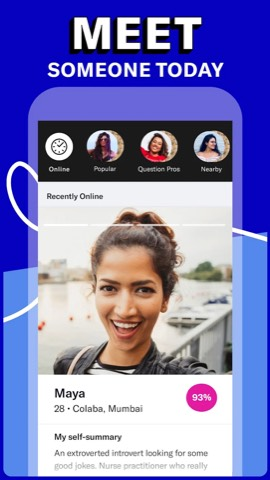
Device-framed browsing UI mirroring slide 2's layout with another India-localized profile (“Maya, 28, Colaba, Mumbai”).
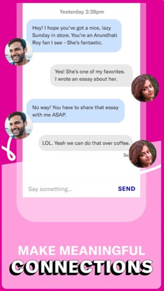
In-app chat referencing a specific personality detail, illustrating “personality-first” matching.
Notable ASO / attractiveness tactics
The only listing whose screenshots themselves — not just the description — show Indian names, cities, and photos; the strongest visible India-localization signal in the whole set.
Strict two-colour alternating background system (magenta/blue) gives strong brand consistency but a busier feel than photography-led carousels.
No category rank badge and no numeric pricing disclosure, unlike higher-ranked peers.
Reviews sampled show a high-severity billing/reliability complaint pattern (charged-but-inaccessible premium features) sitting under an otherwise mid-pack 3.9 rating.
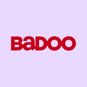
Badoo Dating App: Meet & Date
“Chat and date or make friends! Meeting people is easier than other dating apps.”
Package
com.badoo.mobile
Developer
Badoo
Rating
3.7 stars (6.65M reviews)
Installs
100M+
Monetization
Ads, In-app purchases
Content rating
18+
Category badge
none observed
Last updated
Sep 1, 2026
Description & positioning
Deliberately broad positioning (“you do you” covers fun dates, long-term relationships, and casual chats in one sentence). No emoji in the body; four hyphen-bulleted sections cover perks, features, Premium Plus perks (the only starred section), and a detailed safety section (photo verification, “private detector,” “rude message detector”). Explicitly discloses Bumble Inc. as its parent company.
What's new: No distinct changelog text was surfaced on this pull.
Screenshot carousel
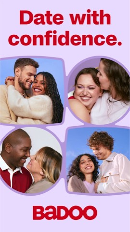
Solid lavender field, red “Date with confidence” headline over a 2x2 grid of real-looking couple photo cutouts — pure brand imagery, no UI.
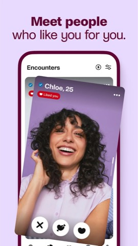
Device-framed “Encounters” swipe screen with a verified profile and a “Liked you” pill.
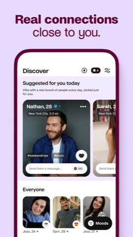
Device-framed “Discover” feed showing a profile with hashtag interest tags and a visible pay-to-message credit cost (“250”) — an unusually transparent monetization cue at the ASO layer.
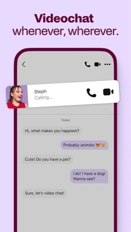
In-app chat transitioning into an incoming video-call overlay.
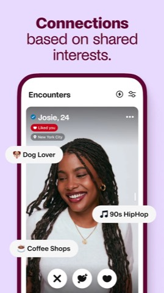
Encounters card with floating interest-tag chips (“Dog Lover,” “90s HipHop”).
Notable ASO / attractiveness tactics
Safety messaging gets its own detailed, named-feature section (photo verification, rude-message detector) — more specific than most competitors' generic safety claims.
Openly names its corporate parent (Bumble Inc.) and sibling apps — a transparency move no other listing in the set makes.
The only screenshot carousel to expose a literal paywall mechanic (a coin-cost badge) before install — transparent, but also surfaces the paywall pre-emptively.
Reviews sampled show a recurring “free-to-download but pay-to-use” sentiment gap against the “free dating app” framing repeated in the description.
Coffee Meets Bagel Dating App
“The dating app for serious daters - Match, meet new people & date with singles”
Package
com.coffeemeetsbagel
Developer
Coffee Meets Bagel Pte. Ltd.
Rating
3.2 stars (125K reviews)
Installs
5M+
Monetization
In-app purchases
Content rating
18+
Category badge
Editors' Choice
Last updated
Aug 24, 2026
Description & positioning
Front-loads three arrow-bulleted hook lines and a strong stat (“91% of our daters are looking for a serious relationship”) before any narrative copy. Four purple-heart-bulleted feature sections use benefit-oriented sentences rather than terse bullets. A named “MEET CMB PREMIUM” section quantifies value (“up to 2x more dates”) without pricing. Closes with quotes from Yahoo Finance, Mashable (x2), and Women's Health.
What's new: Names three specific features: “Topic Suggestions” (AI first-message prompts), “Headlines” (a personality tagline), and “Real Dates” (first-date idea suggestions).
Screenshot carousel
Full-bleed city-street lifestyle photo of a couple, white headline “Date for something real.”Full-bleed beach lifestyle photo, decorative gradient hearts, “Ready to date for something real?”
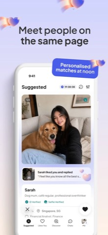
Device-framed Suggested-feed UI on lavender: profile card with ID Verified / Selfie Verified badges and a “Sarah liked you and replied” snippet.
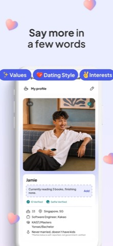
Device-framed profile-editing screen with detailed fields (education, prompts, verification badges) — “Say more in a few words.”
“Editors' Choice” badge substitutes for a numeric rank — likely a stronger trust signal since it's a curated Google distinction, not a leaderboard position.
A specific stat (91%) plus a cumulative usage number (150M matches) plus named press quotes stack three different social-proof types in one description.
Screenshots repeatedly surface “ID Verified” / “Selfie Verified” badges directly on profile cards — a visual trust signal reinforcing the “safe place to meet” claim, not just an assertion in text.
Notably the lowest rating in the set (3.2) despite the curated badge and premium visual polish — reviews cite pricing complaints and slow match delivery, a reminder that ASO polish and review sentiment can diverge sharply.
Opens with a numeric hook (“2.2M success stories”) and self-labels as “the first date-to-marry app,” positioning between casual swipe apps and pure matrimony sites. No emoji; polished, editorial startup-brand voice. Explicitly and transparently names and describes each paid tier with auto-renewal terms — the most transparent monetization disclosure in the set. A distinct “In the Press” section links four outlets (Inc42, Deccan Chronicle, YourStory, Social Samosa), and it closes by naming its parent, Info Edge (India) Ltd. — the company behind Naukri, Jeevansathi, and 99acres — to borrow trust.
What's new: Generic: “Bug fixes and user experience improvements.”
Screenshot carousel
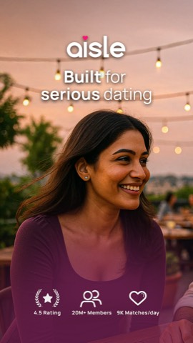
Lifestyle rooftop photo, “aisle” wordmark, and a stat-badge row baked directly into the first frame: “4.5 Rating,” “20M+ Members,” “9K Matches/day.”Paired his/hers lifestyle photo, headline “India's first date-to-marry app.”
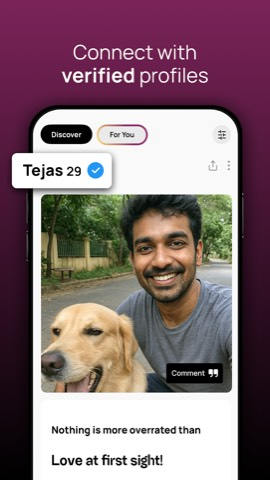
Device-framed Discover-tab UI on magenta gradient: a verified profile with a text-prompt response and a “Comment” icebreaker button — “Connect with verified profiles.”
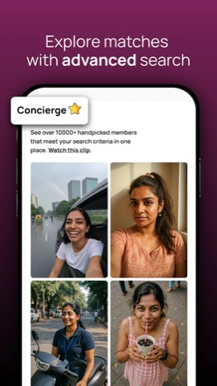
Device-framed “Concierge” premium feature UI showing 10,000+ handpicked members — a paid feature tied directly to its own screenshot.
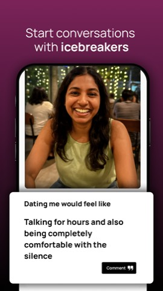
Device-framed profile with a text-prompt icebreaker card — “Start conversations with icebreakers.”
Notable ASO / attractiveness tactics
Positions in a deliberate middle ground — “Dating App For Indians” + “Built for real commitment” — signaling geography and anti-casual intent without using “matrimony,” directly relevant to how a dating-coach-branded app might differentiate from pure swipe apps.
Bakes rating, member count, and daily-match count into the very first screenshot as a persistent stat row — the value proposition is scannable in the single frame most likely to be seen in search thumbnails.
Real device-frame chrome (bezel, notch, side buttons) gives a more “authentic modern app” feel than the matrimony apps' borderless marketing-card style.
Every named feature in the text (Comments, Concierge, Private Browsing, Advanced Filters) has a matching, clearly labeled screenshot — tight text-to-visual consistency.
Highest rating in the whole set (4.6), yet sampled negative reviews repeat the same “matches dry up after payment” pattern seen across matrimony apps — a category-wide weak point.
No visible developer replies to negative reviews — a reputation-management gap versus the matrimony apps, which reply to nearly everything.
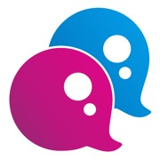
QuackQuack Dating App in India
“Dating app to meet, chat, find friends easier than other dating apps in India.”
Package
com.quackquack
Developer
QuackQuack.in
Rating
4.3 stars (703K reviews)
Installs
10M+
Monetization
Ads, In-app purchases
Content rating
18+
Category badge
none observed
Last updated
Sep 1, 2026
Description & positioning
No emoji anywhere. Plain, long-form paragraphs narrate the whole user funnel (create profile → browse/filter by city and interests → like/chat → an optional human-matchmaker feature → meet offline), name-dropping specific Indian cities for local SEO. Trust/safety messaging (phone/email verification, moderation, fake-profile removal) is unusually prominent — a direct answer to India-market skepticism about dating-app authenticity.
What's new: “Improvements for speed and reliability” — generic.
Screenshot carousel
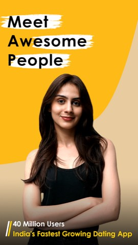
“Meet Awesome People” — mustard-yellow background, brush-stroke-highlight headline, social-proof strap line “40 Million Users — India's Fastest Growing Dating App.”
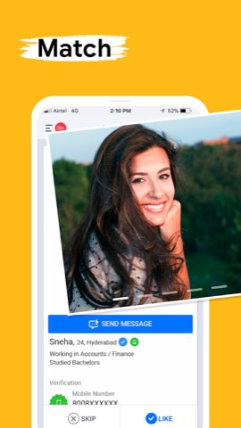
“Match” — device-framed swipeable profile card with verification badges and Skip/Like buttons.
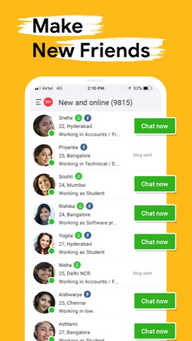
“Make New Friends” — device-framed list view (“New and online (9815)”) emphasizing active-user volume.
“Chat” — device-framed real chat thread arranging a coffee meetup.
Notable ASO / attractiveness tactics
Title keyword-stacks “Dating App” + “India” directly for high-intent local search rather than a brand-only title.
Screenshot sequence tells a literal funnel story (Meet → Match → Make Friends → Date → Chat) using real UI, trading emotional aspiration for credibility.
Distinctive brand color system (mustard yellow + black/white brush-stroke text) creates strong shelf differentiation against the red/pink-dominated category.
Large, repeated social-proof numbers (39M/40M users) anchor both the description and the first screenshot's overlay text.
Description is thorough but the least scannable in the set — no emoji or bullet aids despite being one of the longest.
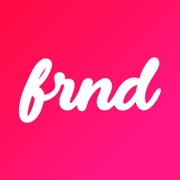
FRND: Talk to Friends Online
“Live Audio & Video Calling App To Connect With Friends, Meet Online & Play Game”
Package
com.dating.for.all
Developer
FRND
Rating
4.5 stars (577K reviews)
Installs
50M+
Monetization
In-app purchases
Content rating
12+
Category badge
#10 top free social
Last updated
Aug 26, 2026
Description & positioning
Opens in Hinglish (“Boring life ko bolo tata bye-bye 👋 aur FRND pe naye dosto ko kaho Hi ♥️”) — the most India-vernacular hook in the whole set, at extremely high emoji density throughout. Frames itself as friendship/social first despite a package id (com.dating.for.all) that suggests a dating-category origin. Lists 12 supported Indian regional languages and layers in creator-economy mechanics (become an “RJ,” earn rewards, virtual gifts) absent from every pure dating app reviewed.
Magenta background, flat cartoon-avatar friend-network diagram — “Your New Social Circle,” no real photography anywhere.
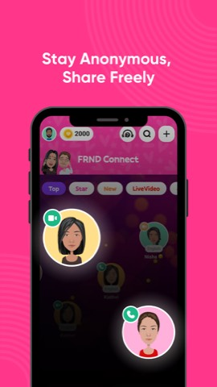
Device-framed discovery/room-browsing UI with cartoon-avatar tiles and a coin balance — “Stay Anonymous, Share Freely.”
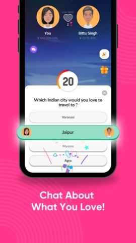
Device-framed icebreaker/game UI with a “Love Meter” and a multiple-choice question — “Chat About What You Love!”
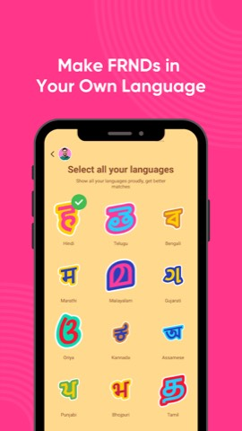
Device-framed language-selection screen showing 11+ regional scripts — “Make FRNDs in Your Own Language.”
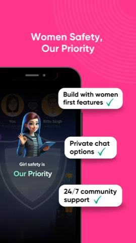
3D cartoon safety mascot over a dimmed screenshot with three checkmarked safety-feature chips — “Women Safety, Our Priority.”
Notable ASO / attractiveness tactics
The most India-localized ASO approach in the set: Hinglish copy from line one, a 12-language feature list, and a dedicated language-picker screenshot.
An anonymity-first, no-real-photos visual identity (flat cartoon avatars throughout) directly supports its “hide your face, still connect” positioning — relevant if a lower-friction, less photo-dependent onboarding path is ever worth exploring.
“Women Safety” gets its own dedicated screenshot with a mascot + checklist — a more visual, concrete trust treatment than competitors' paragraph-only safety copy.
Lower content rating (12+) than every dating app in the set, reflecting its friendship-first positioning and likely widening its addressable install base.
Shaadi.com Matrimony App
“India's most trusted matrimony & marriage app - 30 years of matchmaking legacy”
Opens with an emoji-laden hook and immediately stacks social-proof numbers (35 million members, 8 million marriages, 30 years) before explicitly disavowing “casual dating” and “swiping.” The body is organized into clearly emoji-labeled sections, then a long SEO tail covering every religion, community, regional language, NRI country, and city — plus an “Also known as” block of common misspellings purely for search-match capture. Repeats its three core stats a second time as a closing hook.
What's new: Generic stability/performance message — no feature-specific changelog.
Screenshot carousel
Lifestyle photo, sunlit forest, red/white headline “India's OG Matchmakers / for 30 years.”Paired lifestyle photo (his/hers), “Install & Message for Free.”Solid-red feature card: “Highest rated matrimony app in India,” a 4.4★/5L-reviews badge plus stacked testimonial quotes.Red card, “80% profiles are multi-verified,” a verified profile photo with AI/Phone/Selfie-verified pill badges.Red card, “100% privacy and contact filters,” a blurred phone-call photo with a padlock icon and masked contact fields.
Notable ASO / attractiveness tactics
Title stays brand-only — all keyword stacking (every religion, caste, region, NRI country, city, and misspelling) is pushed into the long-tail description instead.
Social-proof numbers are bracketed at both the top and bottom of the description — a deliberate repetition technique.
Explicitly anti-positions against “dating apps” (“No casual dating. No swiping.”) to reassure a marriage-seeking, family-oriented audience.
Verification and privacy are the two most emphasized trust mechanics in both copy and screenshots — a direct answer to the “fake/bot profile” complaint visible in its own reviews.
Developer replies to nearly every visible negative review within a day, using the reviewer's first name — a visible, personalized reputation-management habit.
Bharat Matrimony® Marriage App
“Biggest Matrimony & Shaadi App for Indians from Matrimony.com Group”
Package
com.bharatmatrimony
Developer
Matrimony.com Ltd.
Rating
4.0 stars (193K reviews)
Installs
10M+
Monetization
Freemium (Prime/premium membership for chat, calls, photo/number unlock)
Content rating
18+
Category badge
none observed
Last updated
Jul 28, 2026
Description & positioning
Opens in all-caps with a direct authority claim, then doubles the opening in Hindi (Devanagari script) — a bilingual structure not seen anywhere else in the set. No emoji at all; all-caps section headers replace them. The misspelling-capture tactic is unusually overt, calling out “sometimes misspelled as Bharath or Barath” directly inline rather than burying it in a footer. Cross-promotes the wider Matrimony.com portfolio of language- and community-specific apps at the end.
What's new: Minimal: “Bug Fixes and Performance Enhancements.”
Screenshot carousel
A 3x3 grid of named real “success story” couple photos with stat callouts: “26 Years,” “4 Crore+ Customers Served.”Mother/daughter lifestyle photo with an in-hand phone showing a Hindi language toggle — “Bharat Matrimony now available in Hindi too.”Genuine in-app match-list UI (tabs, match count, verification badges, bottom nav) — the most literal, detailed UI screenshot of any matrimony app reviewed.Genuine horoscope/kundli-matching UI with real astrology-chart fields — an India-specific feature given its own dedicated screenshot.A blurred profile photo behind an “Upgrade to view photo” CTA — ties privacy messaging directly to the paywall mechanic.
Notable ASO / attractiveness tactics
The only listing with a bilingual English+Hindi description block right at the top — a distinctive India-localization signal, reinforced by a dedicated “now in Hindi” screenshot.
Opens its screenshot carousel with a named-couples testimonial grid rather than stock photography — leans into authenticity immediately.
Shows genuine, detailed in-app UI (real nav bars, buttons, match counts) more than any other matrimony listing, at the cost of a less polished/branded look.
A privacy/paywall coupling shown very literally on-screen (blurred photo + upgrade CTA) is more transparent about the monetization mechanic than Shaadi.com's more abstract framing.
Lower rating (4.0) than Shaadi.com (4.4) on a similar install base; sampled reviews repeat the same “profile flow dries up post-payment” complaint pattern.
none observed (categorized as “Social,” not “Dating”)
Last updated
Sep 18, 2025
Description & positioning
A sequence of short, bolded section headers (“Find matrimony profiles by religion,” “...by mother tongue,” “...from top Indian cities”) reframes a faceted-search feature list as SEO copy. Virtually no emoji; plain, transactional tone. Named castes, religions, languages, and cities are exhaustively enumerated. Embeds hard numbers directly in the copy (“20 lakhs verified profiles, 2 lakh+ relationships, 15,000+ marriages”) and cross-sells adjacent services (astrologer, wedding planning, love coach) to position itself as a full wedding-journey platform.
What's new: Not visible as a distinct section on this pull — also the oldest “Updated on” date of any app reviewed (Sep 2025).
Screenshot carousel
Landscape collage of small real wedding-couple photos with a duotone overlay, banner “MET ON BETTERHALF” and “20,000+ couples.”Landscape marketing graphic: a rendered hand holding a phone showing a selfie-verification camera UI — “Selfie Verified Profiles.”Landscape graphic: two illustrated profile cards linked by a heart icon, banner “GUARANTEED” — “Compatible Connections.”Landscape graphic: a couple's faces cropped into a heart shape, floating compatibility-filter tags (Language, Income, Food Habits) — “Helping You Find Better Love.”Landscape graphic: a young couple with playful chat-bubble callouts — “Designed for the New Generation.”
Notable ASO / attractiveness tactics
Title and subtitle both foreground “Matrimony” over “Dating,” and the app sits in Google's “Social” category rather than “Dating” — a deliberate distancing from casual-dating connotations.
The most aggressive keyword-stacking in the set (religion, caste, mother tongue, city, all enumerated) at a real cost to prose readability.
Every screenshot is an illustrated/composited marketing graphic — none are literal device-framed UI captures, so a prospective installer sees zero real app screens before installing, unlike every other app profiled.
Landscape-orientation screenshots render smaller and more compressed inside Play's mobile carousel strip than the portrait phone-mockup style everyone else uses.
No category rank badge is shown — worth noting since a rank badge is a low-effort, high-visibility trust signal other apps in this set benefit from.
Cross-sells adjacent services (astrology, wedding planning, love coach) — a differentiated retention/monetization angle beyond pure matchmaking.
Knot.dating - AI Matrimony
“Trusted matrimony & matchmaking app for serious relationships”
Package
com.knotdating.live
Developer
Knot Dating
Rating
4.1 stars (598 reviews)
Installs
10K+
Monetization
Not disclosed via store badges (invite-only, verification-gated)
Content rating
18+
Category badge
none observed
Last updated
Aug 23, 2026 (v1.0.49)
Description & positioning
Opens with “Tired of casual dating? Now tie the Knot,” immediately claiming “India's first AI-powered conversational matchmaking experience” against rigid-filter matrimony platforms. No emoji; clean, aspirational, editorial tone. Since it can't yet compete on scale (598 reviews, 10K+ installs, no rank badge), it substitutes founder-pedigree social proof (“Founded by Shark Tank-backed entrepreneurs”) for install/rating numbers, and discloses no subscription pricing anywhere.
What's new: Generic: “Bug fixes and performance improvements for a smoother app experience.”
Screenshot carousel
A modern Indian bride and groom in wedding attire wearing sunglasses; headline “Tired of dating? Now tie the Knot” + “India's First AI Matchmaker.”Genuine identity-verification/selfie-liveness screen — “100% Verified Profiles.”Genuine match/home feed with matrimony-style bio fields (community, education) and an AI “Why is this match good for you?” explanation prompt.Genuine “Meet your match!” reveal screen with both users' avatars side by side.Genuine onboarding step offering an AI phone call to auto-build the user's profile from a biodata upload.
Notable ASO / attractiveness tactics
Title stacks both “dating” and “matrimony” intent keywords in one string, surfacing for marriage-minded searches a pure “dating app” title would miss.
Leads its very first screenshot with an unambiguous positioning claim (“India's first AI Matchmaker”) to compensate for a tiny review base versus the scale leaders in this set.
Foregrounds real UI (verification flow, AI-curated feed, AI-assisted profile creation) across 4 of 5 screenshots to prove its “AI” claim functionally, not just assert it in copy.
Visible reviews contradict the shipped polish implied by the screenshots — slow uploads, multi-day “profile under review” delays, and a broken “finding you matches” screen — a real gap between marketing promise and product worth watching for any app's own ASO-to-QA consistency.
Blends matrimony-style profile fields (caste/community, education, height) into a modern swipe-card UI — a distinctly India-market hybrid pattern not seen in any Western listing reviewed.
Note: Woo (could not be completed)
Woo — the India-founded dating app historically operated by U2opia Mobile under the package id
com.u2opia.woo — could not be located on the Google Play India store as of this audit.
Direct package-id lookups returned "Not Found," and web search suggests the listing may have been
repositioned toward a US 30+ dating market under a different title, or delisted outright. A separately
named app, "WooPlus" (curvy/body-positive dating, a different market and positioning), and an unrelated
US micro-app also called "Woo Dating" were both checked and correctly excluded as non-matches. No
screenshots or notes were substituted in Woo's place. Recommendation: confirm whether Woo
should be dropped from the competitive set going forward, or replaced with an active alternative —
"you&me" and IndianCupid surfaced repeatedly as adjacent India-market alternatives during the search.
Next Steps
This report closes the baseline-research phase. The next two steps, per the original brief, are: (1)
use the patterns above to infer what Riteangle's own Play Store listing should say and show, and (2)
develop the actual creatives (icon, screenshots, description copy) before updating the live listing.
Both should be treated as separate, deliberate follow-on pieces of work rather than folded into this
audit.